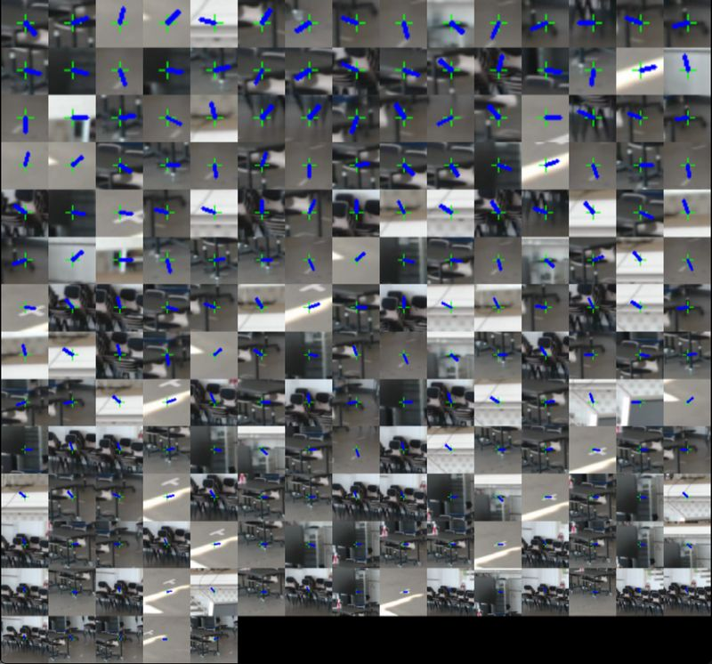
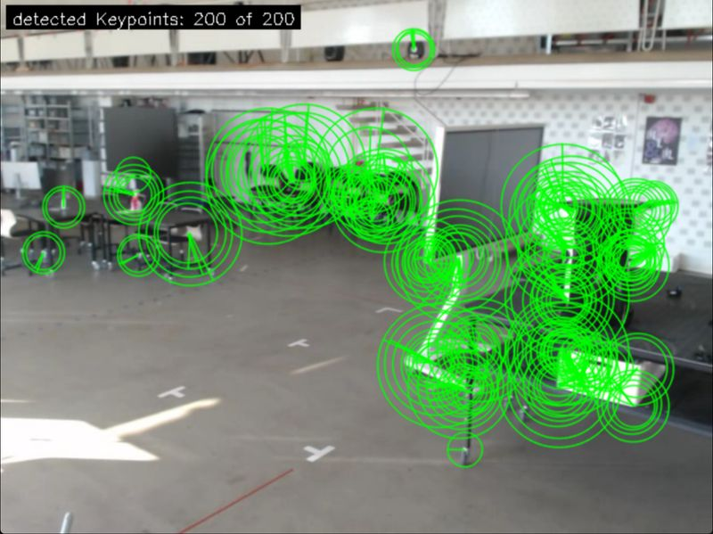
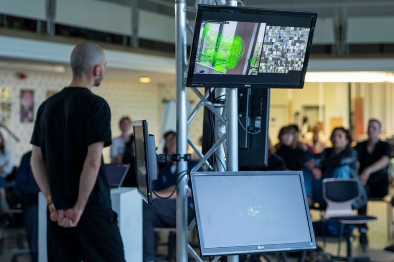
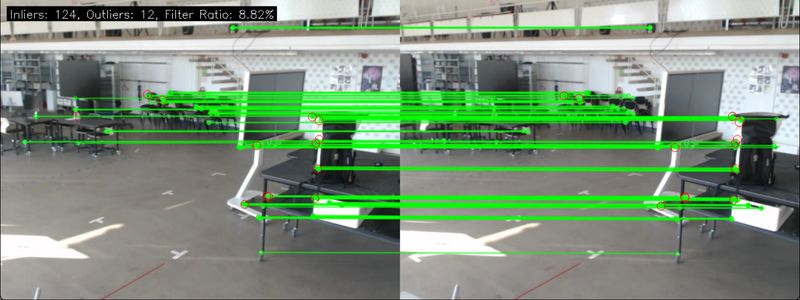
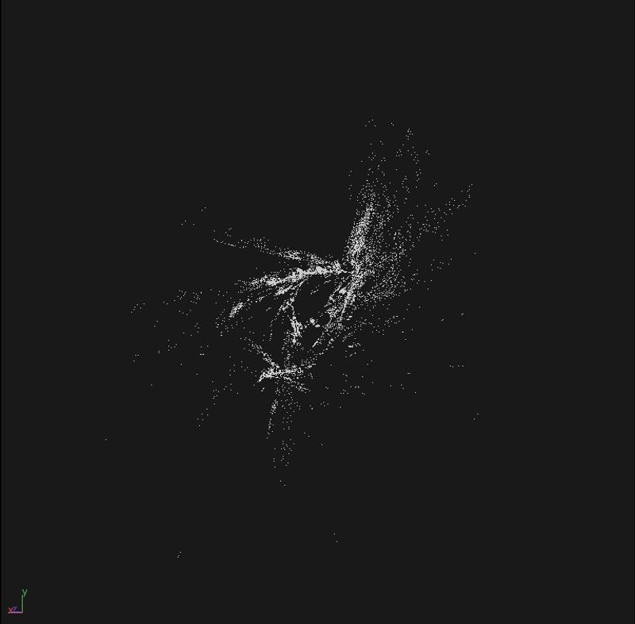
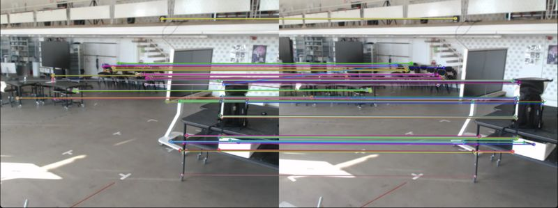
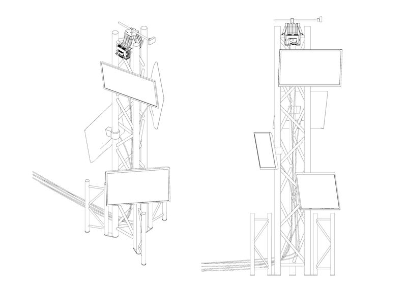
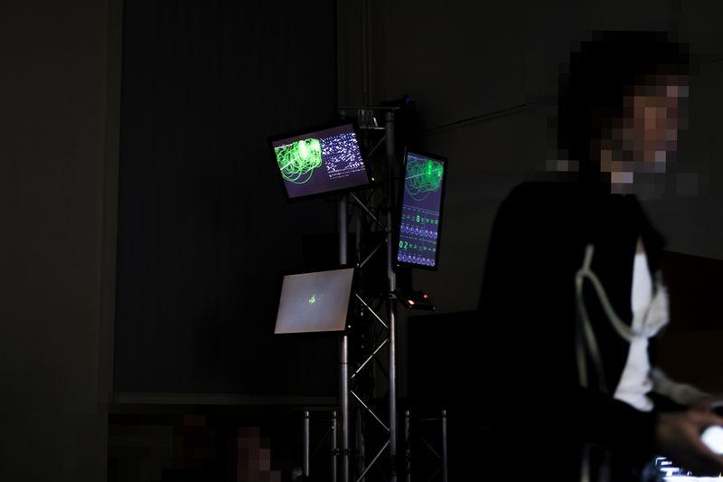
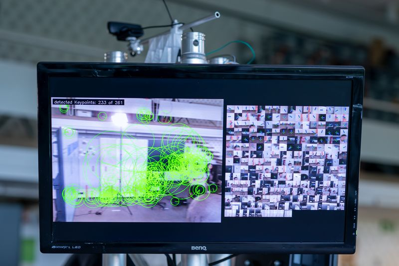
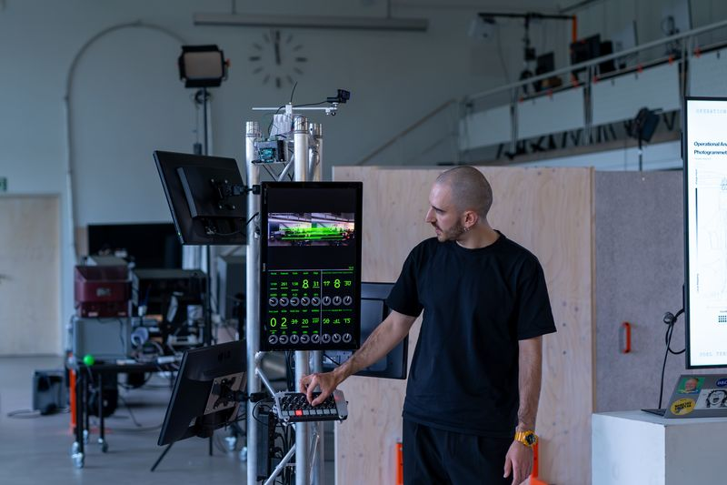

Operational Analysis of Photogrammetry
Tracing the Transductive | Master's Thesis, Universität der Künste Berlin & TU Berlin
Photogrammetry has become invisible infrastructure, embedded in Google Maps, autonomous navigation, and biometric surveillance. We depend on it to make sense of space, yet its workings remain opaque. This project opens the black box of algorithmic image processing, investigating not what photogrammetry produces, but how it actively constructs spatial knowledge through a network of interdependent algorithmic choices. Rather than treating photogrammetry as a neutral tool, the research positions it as an active mediator that shapes both the technical processes and the world it measures.

Overview
Photogrammetry, the reconstruction of 3D space from overlapping photographs, is typically understood as an objective representation technology. This thesis challenges that assumption by developing a systematic method for mapping photogrammetry's internal mechanisms and exposing the values embedded in its operations. Using Operational Analysis (Friedrich & Hoel, 2023), the project examines each algorithmic step not in isolation but as part of an interdependent network. Feature detection, image matching, pose estimation, and point cloud construction do not simply process data. Each operative moment restructures the conditions for the next, creating a cascading effect where early decisions reverberate through the entire pipeline. The work traces how photogrammetry transforms visible images into machine-readable data through successive quantifications: brightness values become corner detections, detections become binary descriptors, descriptors become geometric correspondences, correspondences become 3D coordinates. At each transformation, certain information is selected while other information is discarded. These selections are presented as objective, inevitable consequences of physics and mathematics, yet they actually encode specific assumptions about what counts as valid spatial information. The thesis argues that understanding these operative moments, the precise instants where algorithmic work happens, is the prerequisite for challenging algorithmic opacity and reclaiming human agency over technical systems.

Challenge
Contemporary computational sensing operates through black-box systems where internal mechanisms remain hidden from users, regulators, and often even developers. Photogrammetry exemplifies this problem in several ways.
Epistemological:
Photogrammetry appears to simply "capture" spatial reality. In fact, it actively constructs what can be known about space. A corner detection threshold decides which visual features matter. A matching tolerance determines which image correspondences are valid. A point cloud size limit controls the final resolution of reconstruction. These parameter-level choices directly shape what spatial information survives the algorithmic pipeline and what is lost. Edge cases fall outside statistical averages and disappear entirely.
Cultural:
There is profound alienation between users and the technical operations they depend on. Someone prepares images for photogrammetry and receives a point cloud, but never engages with the actual transformation. The work remains veiled. As Simondon diagnosed in 1958, this creates a rift between technical reality and human understanding.
Methodological:
Linear textual description cannot adequately represent algorithmic complexity. Writing about feature detection, then feature matching, then pose estimation misses the recursive interdependencies, the way each step reshapes the data space for the next, the mesh-like rather than linear structure of computation. A different representation method was necessary.

Solution
Operational Mapping
Rather than accepting algorithms as monolithic, the research decomposes photogrammetry into operative moments, precise instances where the algorithm actively transforms data and restructures the pipeline. These moments are organized and displayed on a actual map (see also Map of Operational Analysis.pdf). This two-dimensional analytical space enables simultaneous mapping of both the sequence of operations and the entangled dependencies within each step. The resulting diagrammatic map visualizes these relationships spatially, revealing the network structure that textual description obscures. Crucially, mapping itself generates understanding. The act of spatializing algorithmic logic forces granular examination of each component's dependencies and connections. The map is both a research method and a communication tool.


Practical Reconstruction
Theory alone cannot overcome black-box opacity. The project includes a working installation, a real-time implementation of ORB-SLAM3 (a Structure-from-Motion algorithm) built in TouchDesigner. The system continuously scans a physical space, visualizes each computational step on screens (feature detection, matching, triangulation), and exposes all parameters as adjustable variables. Users can modify corner detection sensitivity, matching tolerance, or maximum point cloud size and immediately observe how these changes cascade through the pipeline, producing radically different spatial reconstructions. This direct feedback loop transforms photogrammetry from an opaque black box into an interrogable system. The installation demonstrates that photogrammetry is neither inevitable nor neutral. Its operation is contingent on specific parameter choices. Making those choices visible and adjustable returns agency to human operators and reveals the algorithmic system as a constructed object rather than a force of nature.


Theoretical Grounding
The analysis draws on Gilbert Simondon's concept of transduction, the process by which technical systems organize themselves through adaptive interaction with their environments. Photogrammetry continuously individuates itself; each operative moment structures conditions for the next. Understanding photogrammetry means mapping these transductive processes: where does information flow get regulated? Where do validity decisions happen? How do physical constraints (camera calibration, lighting) interact with algorithmic logic? By identifying transductive moments, the project makes visible the technical object's becoming, how photogrammetry emerges from the interplay of mathematical principles, algorithmic choices, physical constraints, and situated contexts of use.




Role
Research, Planning, Execution
Project
Master Thesis · 2025
Tags
photogrammetry, TouchDesigner, Python, computervision, 3Dprinting
Timeline
6 months
Technologies
- TouchDesigner
- Python
- ORB-SLAM3
- SfM